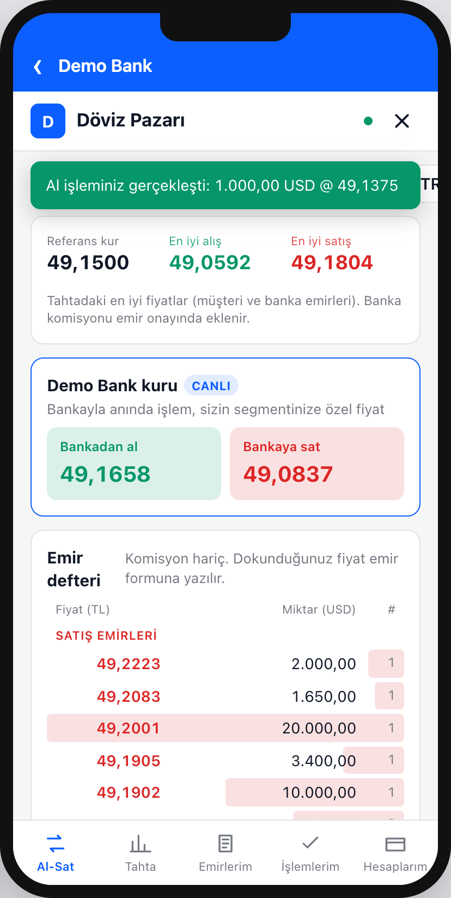

p2pFX
Müşterileriniz kendi kurunu belirlesin, banka karşı taraf olsun
Mobil bankacılık uygulamanızın içinde, kendi markanızla çalışan müşteriler arası döviz ve kıymetli maden pazarı.


Mobil bankacılık uygulamanızın içinde, kendi markanızla çalışan müşteriler arası döviz ve kıymetli maden pazarı.
Müşteri vadesiz döviz hesabındaki parayı kendi fiyatından satışa çıkarır, aynı bankanın başka bir müşterisi alır. Eşleşmede banka satıcıdan alır, alıcıya satar.
Her eşleşmede alış ve satış tarafından ayrı komisyon. Banka iki işlemi aynı miktar ve fiyatla yapar; pozisyon oluşmaz.
Müşteriler birbiriyle işlem yapmaz; karşı taraf her zaman bankadır, kayıt ve dekont bankanın mevcut süreciyle.
Ayrı giriş, ayrı cüzdan yok; bankanın renkleriyle, müşterinin kendi vadesiz hesaplarıyla.

| Alıcı (Mehmet) | Satıcı (Ayşe) | |
|---|---|---|
| Kitap fiyatı | 49,1500 | 49,1500 |
| Banka komisyonu (500 pip) | + 0,0500 | − 0,0500 |
| Uygulanan kur | 49,2000 | 49,1000 |
| Komisyon dahil tutar | 49.200,00 TL | 49.100,00 TL |
| Kambiyo vergisi (binde 2, alıcıdan) | + 98,40 TL | yok |
| Hesaptan / hesaba | 49.298,40 TL çekilir | 49.100,00 TL geçer |


LP'lerden gelen en iyi fiyat + segment marjı. Bireysel ve premium müşteri aynı anda farklı kur görür.
Miktar girilir, vergi ve toplamla kesin fiyat alınır; geri sayım biterse yeniden istenir.
Banka kuru P2P fiyatından iyiyse emir bileti bunu müşteriye söyler.
Banka isterse emir defterine kendi hesabından kademeli emirler koyar; likidite ilk günden hazırdır.


P2P eşleşmeler pozisyon yaratmaz; yalnızca banka kurundan yapılan işlemler yaratır ve hepsi tek ekranda yönetilir.


| Bölüm | Neler yönetilir |
|---|---|
| Pariteler | İşleme açma/kapatma, komisyon, fiyat adımı, fiyat bandı |
| Vergi | Döviz ve kıymetli maden oranları, matrah |
| Emir kuralları | Bloke politikası, geçerlilik, emir hızı |
| Saat ve limit | Günler, tatiller; segment bazlı tutar limitleri |
| Banka kuru | Marjlar, kotasyon süresi, pozisyon ve hedge |
| Marka | Banka ve ürün adı, renkler |
Değişiklikler yeniden başlatma olmadan tüm sunuculara ve açık müşteri ekranlarına yayılır.


Editör değeri değiştirir; sistem doğrular ve önce/sonra farkını gösterir.
Gerekçe zorunlu. Kim, ne zaman, neden, neyi değiştirdi silinemez denetim izine yazılır.
Eski versiyona tek tıkla dönülür; her emir girildiği versiyonun komisyon ve vergisiyle işler.
| Rol | Yetki |
|---|---|
| İzleyici | Görür, değiştiremez |
| Editör | Parametre, onay, tekrar deneme, hedge |
| Yönetici | Ek olarak kullanıcı yönetimi |

iOS, Android veya React Native uygulamada WebView + ince köprü katmanı. Döviz hesabı olmayan müşteri tek dokunuşla bankanın hesap açma ekranına yönlenir.